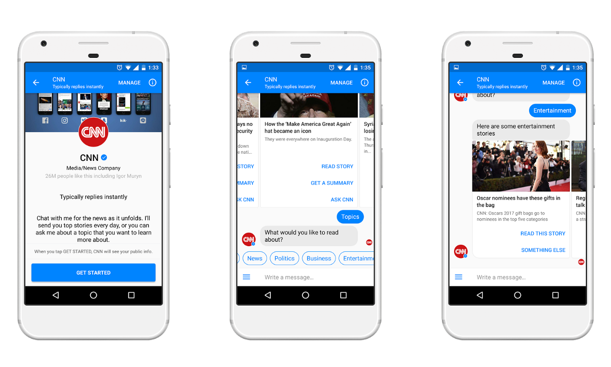

First of all, this article can be interesting for those in which life news media plays an important role, for business people who are owners of some news media and for marketing teams, who want to increase the number of visitors to their resource, but also it’ll be interesting to the ordinary reader.
What is news? What is media? What is news media?
With human development, an opening of the new technologies, particularly the Internet, the word “NEWS” began to gain very extensive concept: starting with news feed in a social network up to news programs on TV.
What is a problem?
At first, people got news with reading newspapers, tabloids, magazines and etc. But now, people start reading press news less because it’s easier to find everything on the Internet instead of reading “kilograms” of a fresh edition.
After the appearance of TV, almost in every house, people started to prefer watching NEWS. Although News on TV is not always about what viewers want to see and mostly based on crime or politics.

However, nowadays technologies become more available for users.
People started to gain information from the Internet when it turned into widespread.
Searching for interesting content makes you tired and bored, even when you are visiting a news website.
The problem is how to attract a young audience, so-called millennials (Generation Y) and post-millennials (Generation Z).
Years pass and we get more opportunities. Social networks become popular and more attractive, so a lot of people choose it instead of anything else.
The world is always in motion, and we don’t have a lot of time to read newspapers, watch the news on TV or explore different news websites via personal computer.
Now you can do all of this stuff with your mobile device.
It’s impossible to imagine your day without a smartphone. Almost 2.4 billions of people are the owners of smartphones and this number is only increasing. It’s an integral part of our life. For millennials and post-millennials it is more enjoyable to search through the social networks.
Today users are very demanding, and they don’t need all the content, they want to see only the selected one.
So, how can we solve this problem?
The global leader in journalism, the Poynter Institute, have an advisable article “10 Ways to Attract Younger News Consumers”.
If short, they recommend:
- Use road signs and context
- Offer “wisdom journalism”
- Personalize
- Rethink news site design
- Experiment with new formats
- Expand “civic journalism” and community coverage
- Put young people in the news
- Reinvent, expand news literacy programs
- Improve sharing features and create self-supporting content
- Explore new approaches to television news
And they are absolutely right!
They tell us to find a modern way to attract the public.
Since the early 2000s, brands have experimented with social media platforms and networks to communicate with customers and prospects. First through weblogs, then eventually through social networks such as Facebook and Twitter.
At the present day, developing technologies are very impressive, especially — artificial intelligence.
You may ask: “How can Artificial Intelligence concern News Media?”.
It’s very simple. An alternative is the chatbots.
A chatbot is a service, powered by rules and sometimes artificial intelligence, that you interact with via a messenger or a chat interface. Now famous media companies like The Wall Street Journal, CNN, Fox News, etc have launched their bots to help you receive the latest news on the go
So, why famous media companies are using chatbots?
Chatbot:
- does not need a lot of time to market.
- is a new contact in your favorite application (Messanger, WhatsApp Viber, Telegram, etc)
- is an interesting new technology that is very comfortable in use and attracts young people.
- gives you an immediate answer.
- is available 24/7.
- have personalized answers.
- also, gives user autonomy.
- is an innovative service and have a clear interface.
Nearly 80% of companies have already used or planned to use chatbots by 2020.
Summary: Don’t be scared of new technologies. They place a great part in our lives and in our future! Let’s chat!